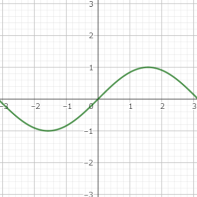
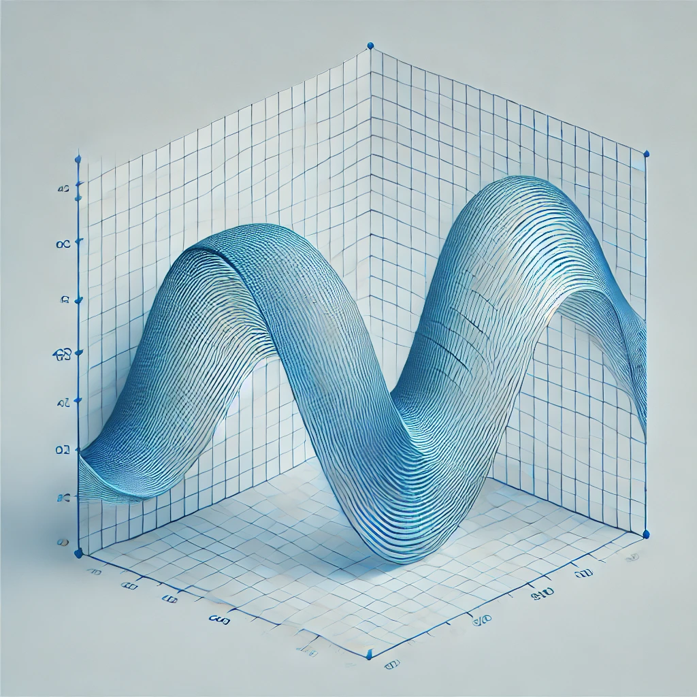

JavaScriptで学ぶグラフィックス処理: 三角関数と線形代数の応用
投稿日：2024年8月19日 作成者：sk-0908
JavaScriptは、ウェブ開発において非常に重要なプログラミング言語です。特に、Canvas APIやWebGLを使うことで、動的なグラフィックスやインタラクティブなアニメーションを作成することができます。本記事では、三角関数と線形代数を活用したグラフィックス処理の基本的な考え方を紹介し、いくつかのコード例を通じてその応用方法を学びます。
三角関数の基礎と応用
グラフィックス処理において、三角関数は非常に重要です。特に、円や回転の処理においてよく利用されます。ここでは、三角関数を使った回転処理を例にとってみましょう。
例: 2Dオブジェクトの回転
2D平面上での回転を考えると、点 (x, y) を原点を中心に角度θだけ回転させた場合、新しい座標 (x', y') は次のように計算できます。
- 𝑥′=𝑥⋅cos(𝜃)−𝑦⋅sin(𝜃)
- 𝑦′=𝑥⋅sin(𝜃)+𝑦⋅cos(𝜃)
この計算をJavaScriptで実装してみましょう。
function rotatePoint(x, y, theta) {
const cosTheta = Math.cos(theta);
const sinTheta = Math.sin(theta);
const xNew = x * cosTheta - y * sinTheta;
const yNew = x * sinTheta + y * cosTheta;
return { x: xNew, y: yNew };
}
// 例: 点 (1, 0) を45度回転させる
const point = rotatePoint(1, 0, Math.PI / 4);
console.log(`Rotated Point: (${point.x.toFixed(2)}, ${point.y.toFixed(2)})`);
このコードでは、(1, 0) の点を45度回転させています。結果として、約 (0.71, 0.71) という新しい座標が得られます。
線形代数学の応用
次に、線形代数を使ったグラフィックス処理を考えてみましょう。特に、行列を使った変換は、オブジェクトのスケーリング、回転、平行移動において非常に有用です。
例: 2D変換行列
2Dグラフィックスにおいて、点 (x, y) に対する変換は、3x3の行列を使って表現できます。例えば、スケーリングと回転の行列は次のようになります。
- スケーリング行列:
[𝑆𝑥 0 0] [0 𝑆𝑦 0] [0 0 1]
- 回転行列:
[cos(𝜃) -sin(𝜃) 0] [sin(𝜃) cos(𝜃) 0] [ 0 0 1]
これらの行列を掛け合わせることで、オブジェクトの変換を1つの行列で表現できます。
まとめ
JavaScriptを使ったグラフィックス処理には、三角関数や線形代数の知識が非常に重要です。本記事では、三角関数を使った回転やアニメーションの実装、そして線形代数を使った変換行列の応用例を紹介しました。これらの技術を駆使することで、より高度でインタラクティブなグラフィックスを作成することができます。
さらに学びたい方は、以下のリソースをチェックしてみてください：